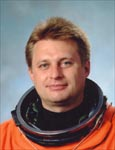

Lyndon B. Johnson Space Center
Houston, Texas 77058
|
National Aeronautics and Space Administration Lyndon B. Johnson Space Center Houston, Texas 77058 |
 |
Biographical Data |
||
Yuri Ivanovich Onufrienko
Colonel, test cosmonaut. Resides in Star City.
PERSONAL DATA: Born February 6, 1961 in Ryasnoe, Zolochev district, Kharkov region, Ukraine. Married to Valentina Mikhailovna Onufrienko (nee Ryabovol). Two sons and one daughter. His parents are deceased. He has two older brothers. Yuri enjoys tennis, cooking, fishing, chess, and flying.
EDUCATION: Graduated from the V.M. Komarov Eisk Higher Military Aviation School for Pilots in 1982 with a pilot-engineer's diploma. Graduated from Moscow State University in 1994 with a degree in cartography.
HONORS: Hero of Russia. Awarded two Armed Forces medals. He was also named a Chevalier in the French Honor Legion
EXPERIENCE: Upon graduation from aviation school, he served as a pilot and senior pilot in the Air Force. In 1989, he was appointed to the position of cosmonaut candidate at the Cosmonaut Training Center. From September 1989 to January 1991, he underwent a course of general space training. Starting April 1991, he underwent training as a member of a group of test cosmonauts. Starting March 1994, he entered flight training to be the commander of the stand-by crew of the Mir-18 expedition aboard the Soyuz-TM-21 transport vehicle and the Mir Station as part of the Mir-Shuttle program.
He has over 800 flight hours and has flown the L-29, SU-7, SU-17 (M1-4), and L-39.
Onufrienko has flown twice and has logged a total of 389 days in space.
SPACE FLIGHT EXPERIENCE: From February 21 to September 2, 1996, he served as Commander on Mir-21. One month later, he and Yuri Usachev were joined by NASA's Shannon Lucid. During Mir-21 he performed numerous research experiments, an participated in six EVAs. He and Yuri Usachev were joined by French cosmonaut Claudie Andre-Deshays after the departure of Shannon Lucid. Altogether, he has logged 193 days in space.
Onufrienko again served as Commander on ISS Expedition-4. The mission launched on December 5, 2001 aboard STS-108 and docked with the International Space Station on December 7, 2001. During a 6-1/2 month stay aboard the Space Station, the crew performed flight tests of the station hardware, conducted internal and external maintenance tasks, and developed the capability of the station to support the addition of science experiments. Wearing the Russian Orlan spacesuit, Onufrienko logged 12 hours and 02 minutes of EVA time in two separate spacewalks. The Expedition-4 crew returned to Earth aboard STS-111, with Endeavour landing at Edwards Air Force Base, California, on June 19, 2002. In completing this mission, Onufrienko logged an additional 196 days in space.
JUNE 2002